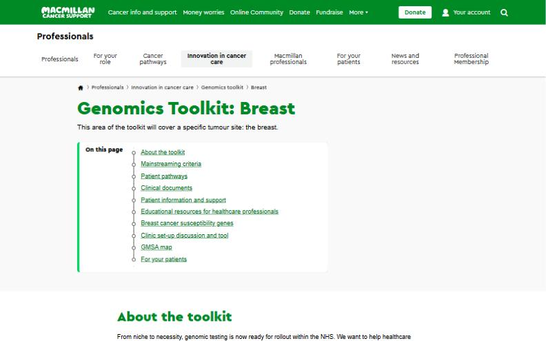
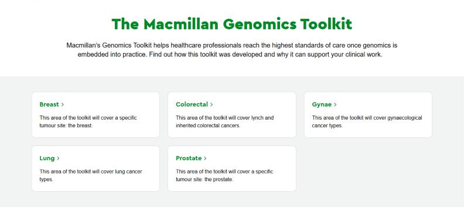

The Macmillan Genomics Toolkit
A clinical slide deck turned into an accessible set of webpages

FromA PowerPoint full of links and images
ToA toolkit for healthcare professionals
The problem
I was the project lead on the Macmillan Genomics Toolkit, a toolkit for healthcare professionals involved in delivering cancer care.
Before this project, there was no content on the Macmillan website about using genomics to treat cancer. The goal of the toolkit was to signpost healthcare professionals to well-established educational resources from the Genomics Education Programme, NHS England and regional GMSAs, and to show how to use this knowledge in practice.
To begin the project, I was given a PowerPoint full of links and images, and a kick-off meeting with the Clinical Fellow and Clinical Engagement Officers.
My approach
It was really clear to me that this was a project where copywriting, content design and governance were key. I didn’t just edit the content. I designed and developed it so it was accessible and usable, while staying relevant for its audience of healthcare professionals.
That meant adding introductions, formatting text and making sure everything stayed on brand. I used content design practices like clear page titles, a logical heading structure and descriptive link text. I also added relevant case studies from elsewhere on the Macmillan website, so internal links could help with SEO.
I used GatherContent to structure the work and shared designs on Miro. I built the toolkit to be scalable from the start, which allowed other content editors to add further areas to the toolkit, following the foundation I laid.

The outcome
It was the biggest piece of content for healthcare professionals at Macmillan in 5 years. The Chief Nursing Officer got in touch with me to say how impressed she was. I’m so happy with the outcome.